Jurnal Eropa · Hari 12 dari 16
Dua janji dibuat semalam, dan pagi ini dua-duanya ditepati: koper yang tertinggal di Frankfurt kembali, dan orang yang tertahan di Paris mendarat. Berempat akhirnya utuh lagi — di bandara yang sama, dua belas jam setelah terakhir berpisah di sini. Sisanya hari biasa: kereta bawah tanah, koper diseret naik tangga, dan London yang menyambut dengan hujan. Lalu koper ditaruh di kamar dan pintu langsung ditutup dari luar lagi — jatah London tinggal setengah hari, dan setengah hari itu dipakai naik bus tingkat ke Westminster — sampai ke satu trotoar tempat dua urusan biaya kuliah kebetulan berdiri berdekatan.
Dua belas jam setelah meninggalkannya tanpa koper
Tidur tiga jam, lalu bangun untuk mengerjakan satu hal yang seharusnya tidak perlu ada di rencana siapa pun: kembali ke bandara yang baru saja ditinggalkan.
Kabarnya sendiri sudah masuk sebelum berangkat. Menurut catatannya, koper-koper itu kembali jam 07.25 pagi — terbang sendiri dari Frankfurt, tanpa pemiliknya, menyusul di penerbangan berikutnya. Perjalanan yang kemarin gagal mereka tempuh bareng kami, hari ini mereka tempuh sendirian.
Dan jam sembilan kurang, koper itu benar-benar ada lagi di depan mata: dua koper besar di atas troli, hitam dan merah tua, dengan label bagasi masih melingkar di pegangannya — termasuk label yang kemarin siang kami cetak dan tempel sendiri di mesin check-in Munich.
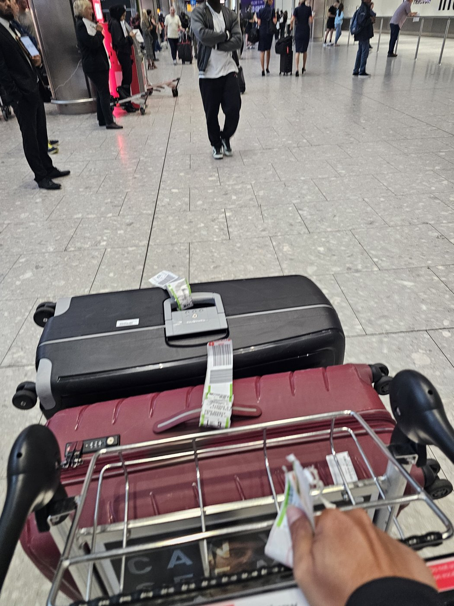
Tidak ada yang dramatis di momen ini, dan justru itu yang bikin lega. Tidak ada formulir tambahan, tidak ada antrean panjang. Barangnya ada, dicocokkan, diambil, selesai.
Dan struk supermarket jam satu pagi itu akhirnya ada gunanya
Yang penting justru terjadi di percakapan, bukan di kopernya.
Petugas maskapai menegaskan satu hal yang kemarin cuma tertulis samar sebagai “delayed baggage entitlements” di surel: ongkos transportasi dan pembelian keperluan pribadi selama koper belum ada itu bisa diajukan. Termasuk perjalanan bolak-balik ke bandara pagi ini, dan termasuk isi kantong belanja jam satu pagi tadi.
Dan asuransi perjalanan ternyata jalur yang kedua, bukan pengganti yang pertama. Kami mengambil polis Zurich sebelum berangkat — polis yang sudah dua kali dibongkar di jurnal ini, di Hari 10, waktu penerbangan dibatalkan. Kali ini yang berlaku pos yang berbeda: keterlambatan bagasi. Dan setelah dicek ke petugasnya, jawabannya bisa diklaim — karena keterlambatannya cukup panjang; kopernya baru kembali jam 07.25 pagi, sementara pesawat kami mendarat malam sebelumnya.
Itu sekaligus menjelaskan kenapa pos ini beda dari yang kemarin. Keterlambatan penerbangan kemarin sore penyebabnya cuaca, dan cuaca adalah pengecualian klasik yang menggugurkan kompensasi maskapai. Keterlambatan bagasi tidak begitu. Bagasi yang tidak ikut terbang itu urusan operasional, bukan urusan langit.
Jadi nasihat yang kemarin ditulis sambil menahan kesal — simpan semua struknya — hari ini berubah statusnya. Bukan lagi nasihat, tapi laporan: struk ASDA £160,60 jam 01.07 dini hari itu sekarang jadi dokumen. Begitu juga tiket kereta bolak-balik ke bandara pagi ini.
Dua belas jam setelah berpisah di gerbang otomatis Munich
Di bandara yang sama, pagi ini, satu lagi janji semalam ditepati: Annette mendarat dari Paris.
Kemarin sore dia berangkat dari Munich lewat rute ketiga, dan jeda transitnya di Charles de Gaulle cuma lima belas menit — terlalu tipis, dan dia tertahan semalam di sana. Pagi ini dia terbang di penerbangan pertama ke London.
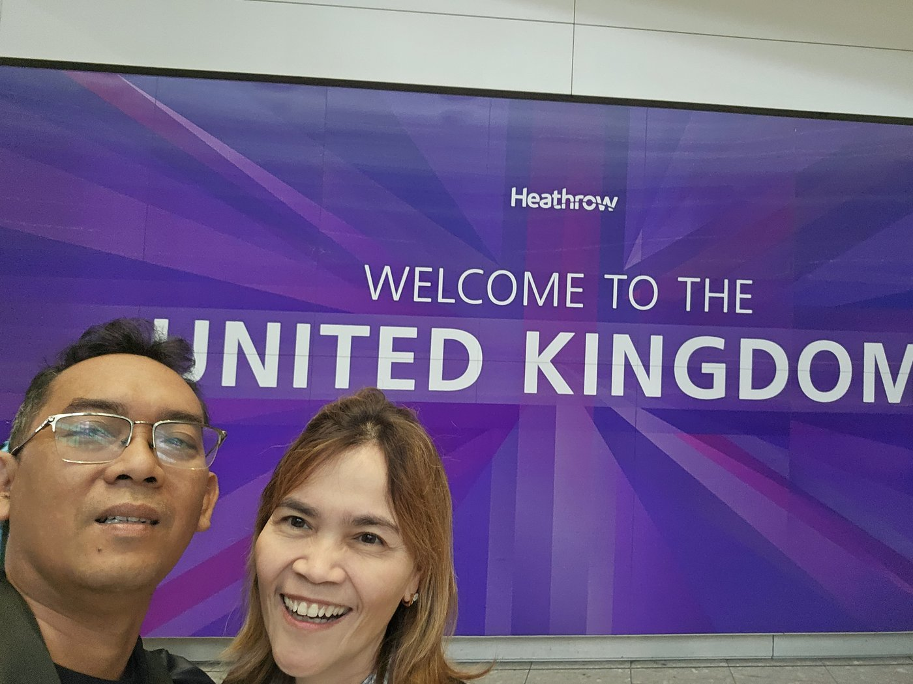
Jadi hitungannya begini: berempat berangkat dari kota yang sama kemarin siang, lewat tiga rute berbeda, dan baru utuh lagi hampir dua puluh jam kemudian — di bandara, bukan di hotel, bukan di tempat wisata mana pun.
Setelah itu, hal paling mewah yang bisa dilakukan: duduk. Sarapan di kedai kopi bandara, koper ditumpuk di troli di sebelah meja, dan untuk pertama kalinya sejak kemarin siang tidak ada apa pun yang harus dikejar.
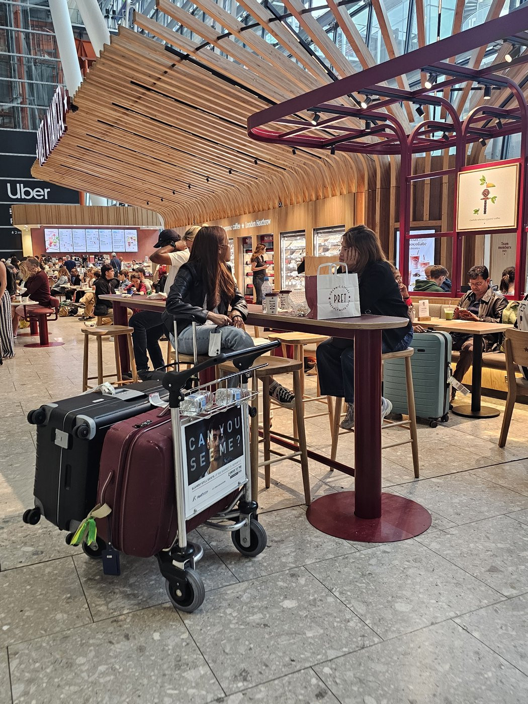
Tiga cara dari Heathrow, dan kenapa yang paling lambat yang dipilih
Empat orang, empat koper besar, dan satu kota yang taksinya terkenal mahal. Pilihannya dibuat cepat: transportasi umum.
Di aula keberangkatan kereta ada papan biru besar bertuliskan Train tickets, dan di bawahnya daftar yang menjelaskan seluruh pilihan yang tersedia dari bandara ini.
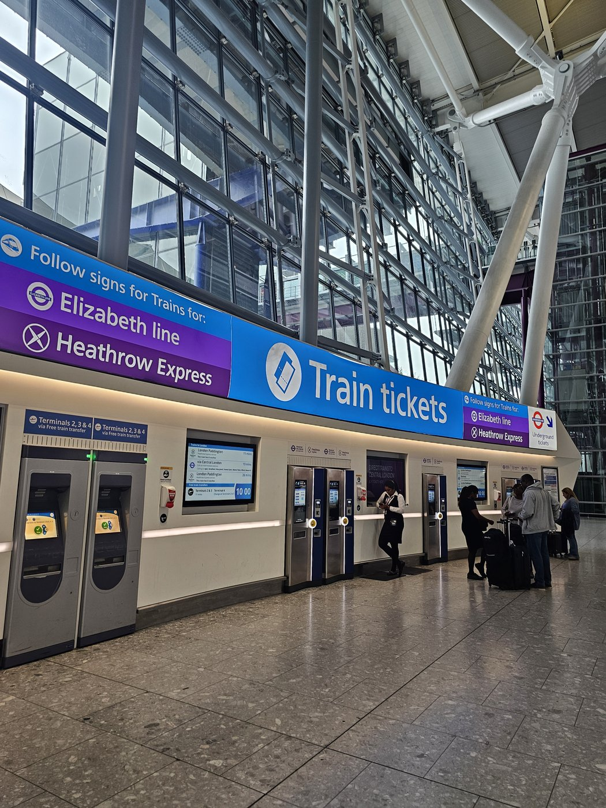
Ringkasnya ada tiga cara, dan bedanya nyata:
Satu hal yang perlu diketahui pendatang, dan yang bikin deretan mesin tiket itu sebenarnya tidak perlu didatangi: di London kamu bisa langsung menempelkan kartu bank nirsentuh atau ponsel di gerbang, tanpa membeli tiket sama sekali. Tarifnya dihitung otomatis, dan ada batas harian — begitu tercapai, perjalanan berikutnya di hari itu tidak menambah biaya lagi. Buat rombongan, tiap orang menempel dengan kartunya masing-masing.
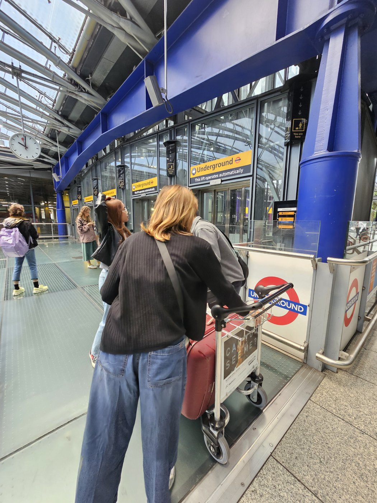
Dan turunlah kami ke peron, jam sepuluh lewat, di ujung barat sebuah jalur yang membentang sampai ke ujung utara kota.
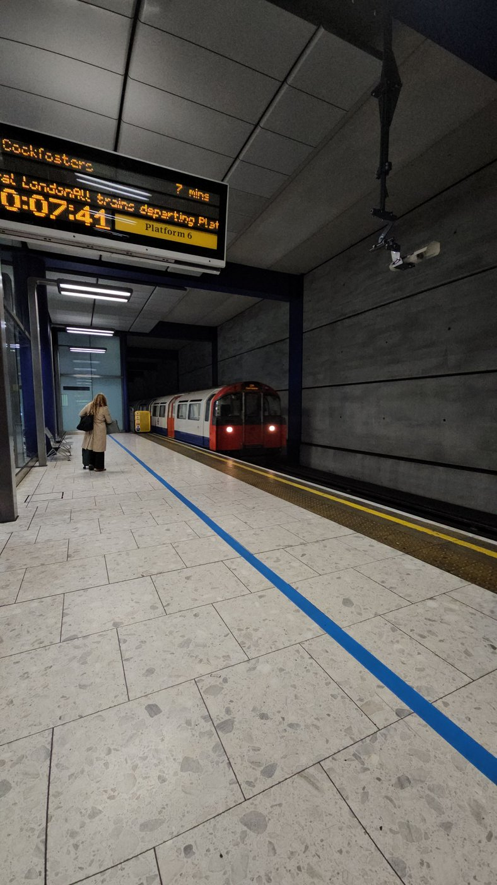
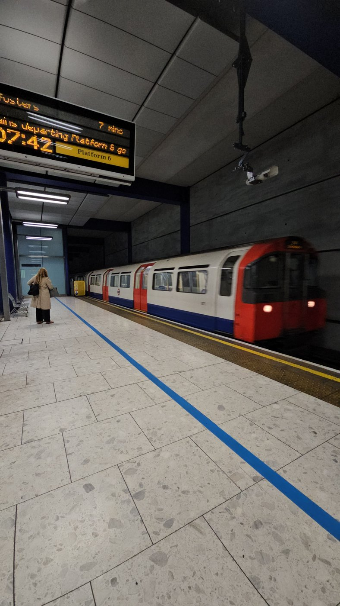
Papannya menulis Cockfosters — ujung timur laut jalur ini, jauh di seberang kota. Dan jam di sudut papannya, 10.07, cocok dengan data foto ini sampai ke detik.
Di dalamnya, kereta pagi arah kota di hari kerja ternyata lapang. Koper disandarkan, dan sisanya cuma duduk — sekitar satu jam, tiga puluh sekian stasiun, dari bandara sampai ke tengah kota.
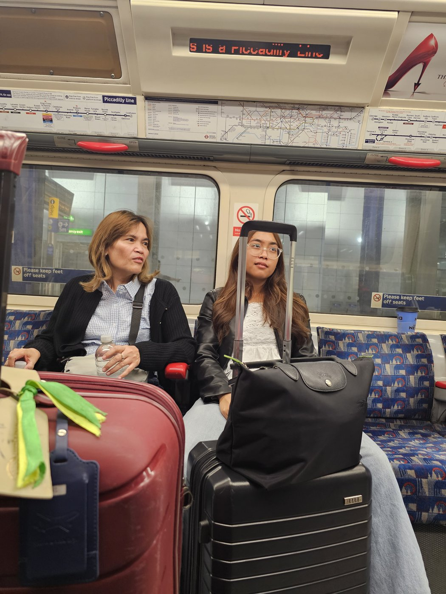
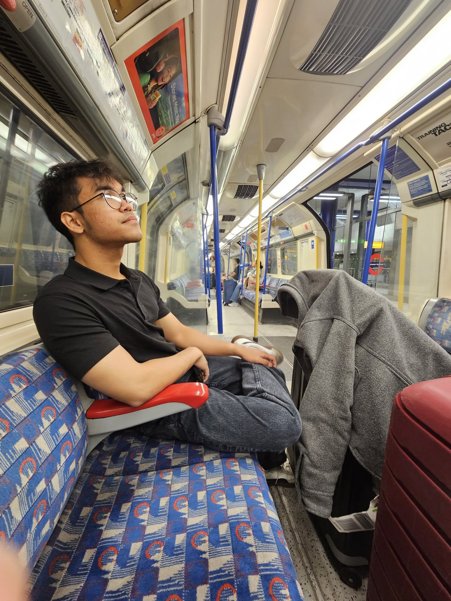
Kursi bermotif biru-oranye itu ciri khas keretanya, dan peta jalur di atas jendela adalah barang cetak paling terkenal di kota ini.
Bagian yang tidak pernah masuk foto liburan siapa pun
Lalu bagian yang wajib dicatat, karena ini pelajaran paling praktis hari ini: kereta bawah tanah London sebagian besar tidak ramah koper.
Jaringannya tua — yang tertua di dunia — dan banyak stasiunnya dibangun jauh sebelum ada yang memikirkan lift. Artinya: tangga. Kadang panjang, kadang beruntun, dan koper dua puluh tiga kilogram tidak jadi lebih ringan cuma karena kamu sedang buru-buru.
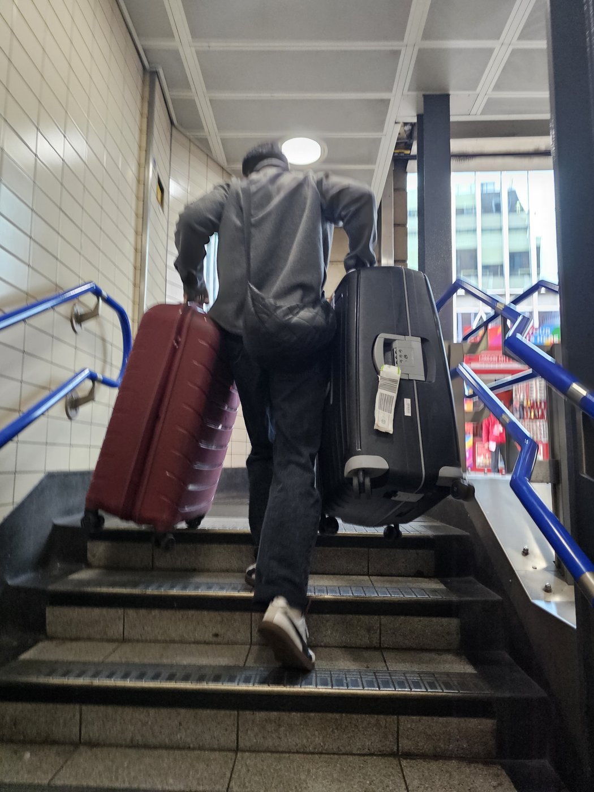
Kalau kamu bepergian dengan koper besar, orang tua, atau anak kecil, cek dulu apakah stasiun tujuanmu punya akses tanpa tangga — di peta resminya ditandai dengan lambang khusus, dan jumlahnya jauh lebih sedikit daripada yang kamu kira.
Dari peron sampai keluar ke jalanan: satu jam dua puluh menit, termasuk satu kali pindah jalur. Naik taksi mungkin setengahnya. Tapi untuk empat orang, selisih ongkosnya jauh lebih besar daripada selisih waktunya.
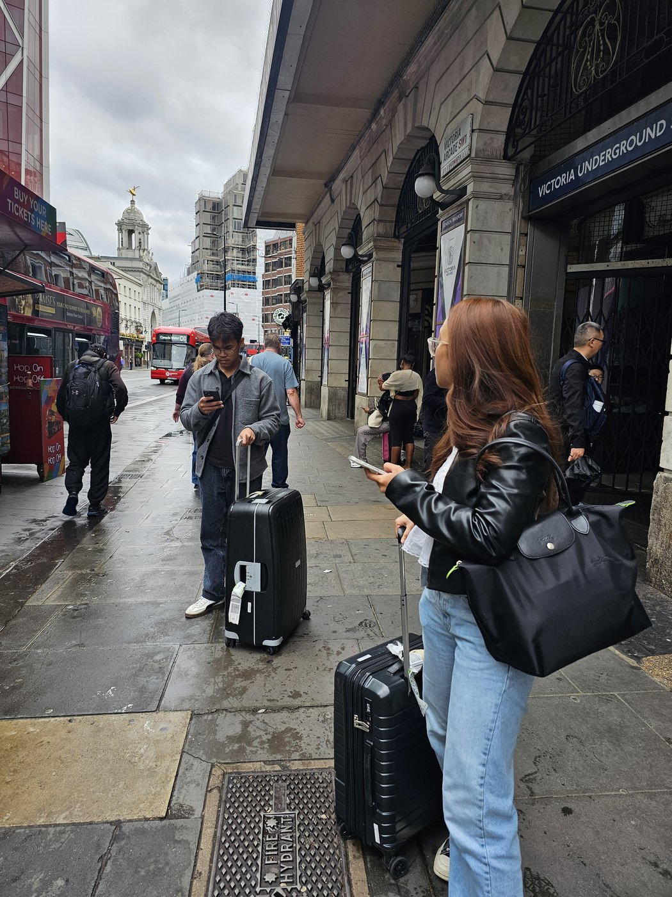
Penginapan kali ini dipilih di dekat Victoria, dan itu bukan kebetulan. Victoria salah satu simpul terbesar kota: stasiun kereta bawah tanah, stasiun kereta antarkota, dan terminal bus antarkota, semuanya berdempetan. Buat rombongan yang bawa koper dan masih punya beberapa hari perjalanan, tinggal dekat simpul seperti ini menghemat lebih banyak tenaga daripada yang kelihatan di peta.
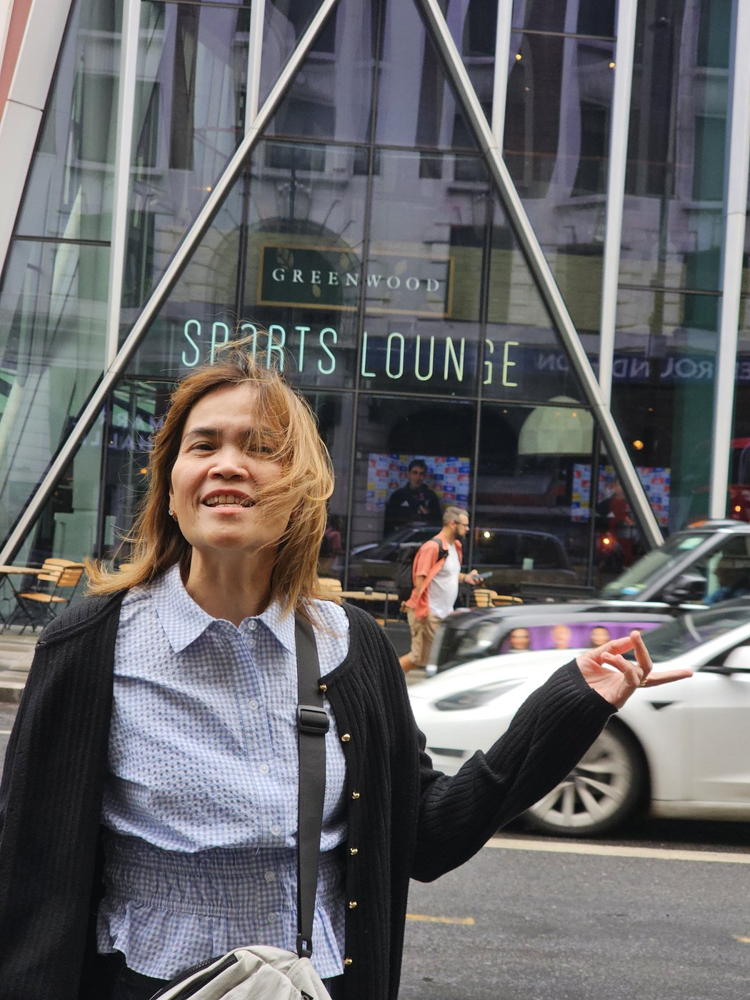
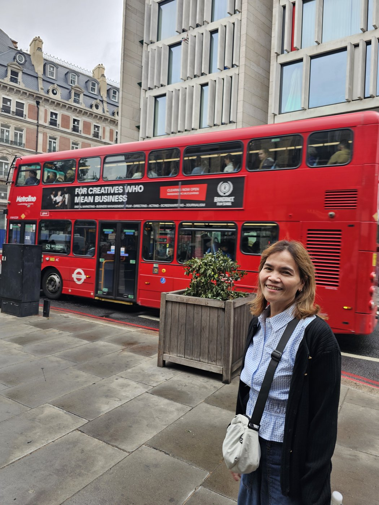
Dua foto pertama yang diambil bukan karena tempatnya penting, tapi karena akhirnya ada tenaga untuk berfoto lagi.
Dengan cara yang paling bisa ditebak
Sepuluh menit setelah keluar stasiun, hujan turun.
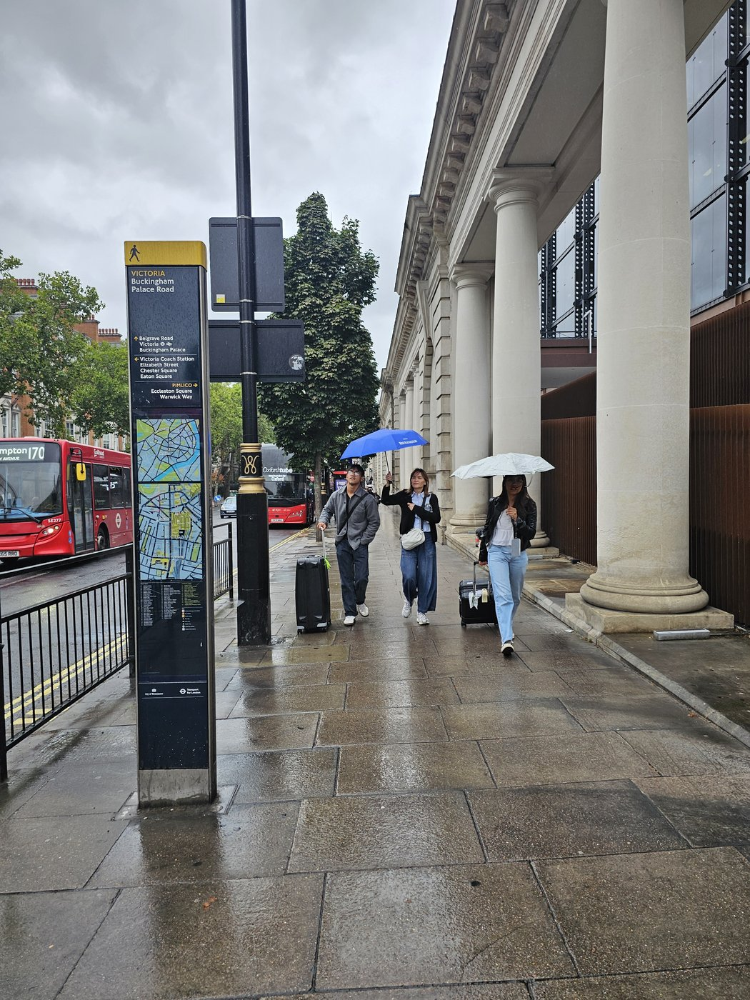
Dua payung dibuka, koper diseret di trotoar yang basah, dan rombongan yang sejak kemarin siang berpencar ke tiga negara akhirnya berjalan beriringan lagi — ke arah penginapan, beberapa menit dari stasiun.
Setengah hari yang tersisa, dan itu dianggap cukup
Sampai penginapan, koper masuk kamar, dan pintu langsung ditutup dari luar lagi. Jam setengah satu siang, rombongan sudah berdiri di trotoar.
Hitungannya memang tidak enak kalau dipikir: jatah London hari ini tinggal setengah hari. Separuhnya sudah dimakan urusan koper, bandara, dan kereta — sisa kerusakan dari penerbangan yang dibatalkan dua malam lalu. Tapi tidak ada yang membahas itu lagi. Yang ada cuma satu keputusan: keluar sekarang, sisanya dipikir nanti.
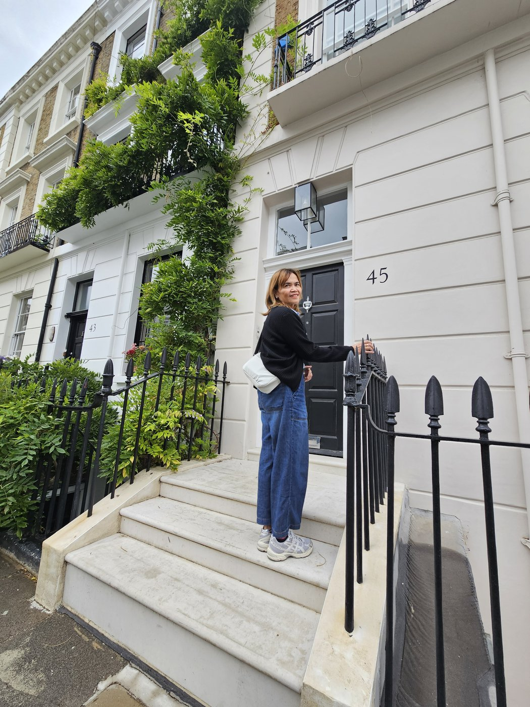
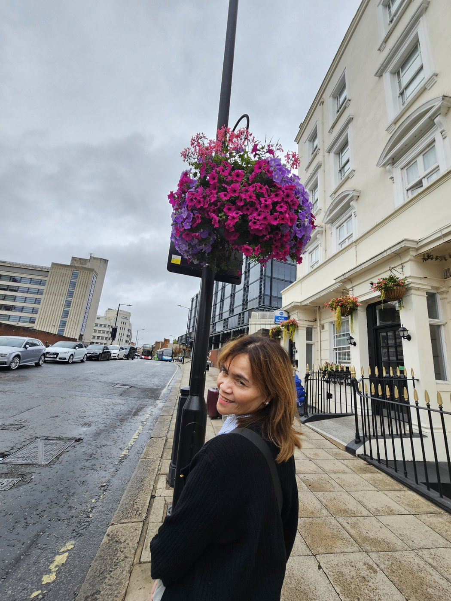
Kiri: undakan batu, pintu hitam, pagar besi runcing, nomor rumah dicat besar-besar — deretan rumah bertembok putih yang jadi ciri kawasan ini, dan tetangganya diselimuti wisteria. Kanan: keranjang bunga gantung di tiang lampu, hal kecil yang ada di hampir tiap tiang di jalan-jalan ini.
Dan satu hal yang langsung terasa begitu keluar: hujan tadi sudah berhenti. Sepuluh menit basah waktu keluar stasiun ternyata itu saja jatahnya.
Tur keliling kota termurah di London, dan dia bukan bus wisata
Di depan stasiun tadi ada bus wisata bertuliskan hop on hop off dengan loket tiketnya sendiri. Kami tidak naik itu. Kami naik bus kota biasa — yang merah, bertingkat, yang dipakai orang berangkat kerja.
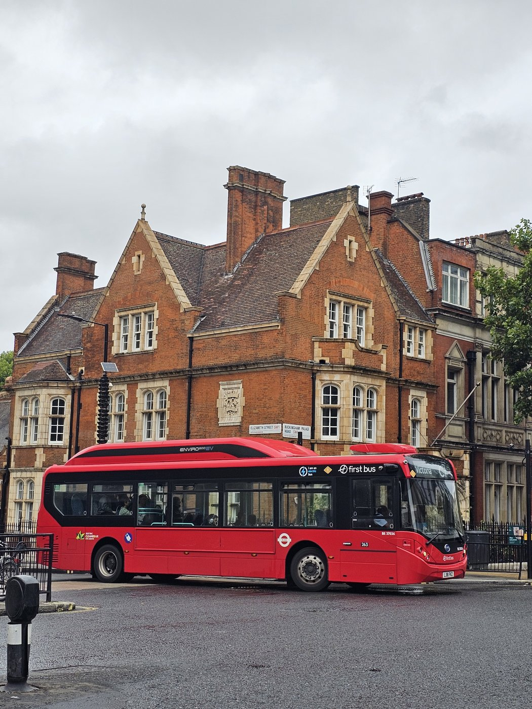
Ini salah satu tips paling berguna buat siapa pun yang ke London bawa rombongan: naik bus tingkat biasa, langsung ke lantai atas, ambil kursi paling depan. Pemandangannya persis sama dengan bus wisata beratap terbuka — kaca depan lebar, jalanan di bawah, gedung-gedung sejajar mata — bedanya cuma satu: ongkosnya ongkos bus kota, dan kamu cukup menempelkan kartu yang sama seperti di kereta tadi.
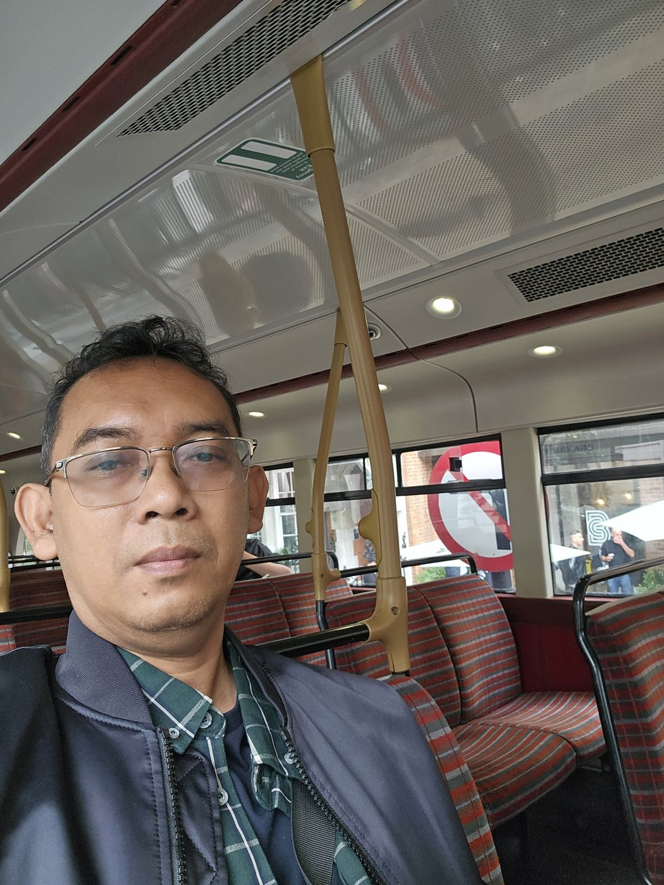
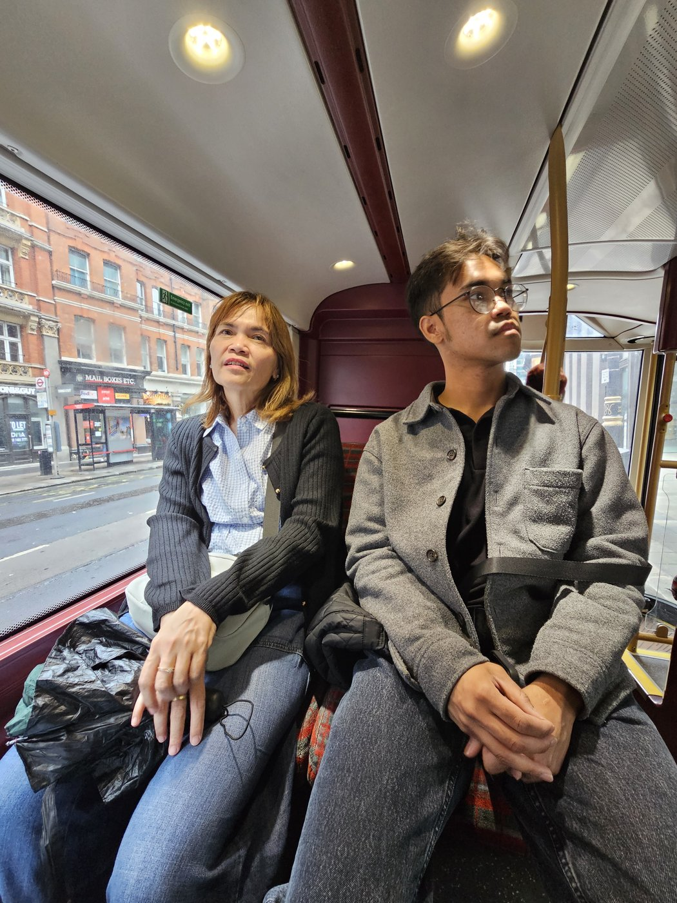
Lantai atas, jam satu kurang. Pegangan tangan kuning gading, kursi bermotif, dan jendela yang tingginya persis setinggi lantai dua bangunan di sepanjang jalan.
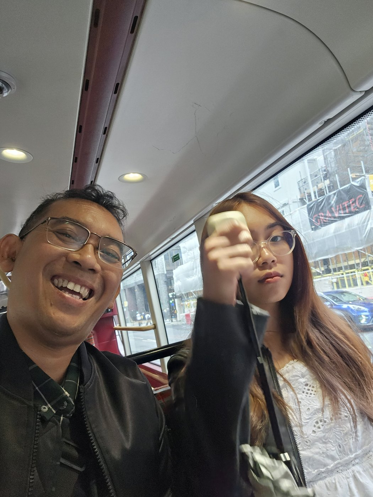
Dua hal di satu perempatan, dan dua-duanya gampang terlewat
Beberapa menit dari stasiun, bus melewati satu perempatan yang punya menara jam mungil berdiri sendirian di tengah trotoar — besi cor hitam dengan ukiran keemasan, tinggi cuma beberapa meter, dan bentuknya jelas meniru satu menara lain yang jauh lebih terkenal.
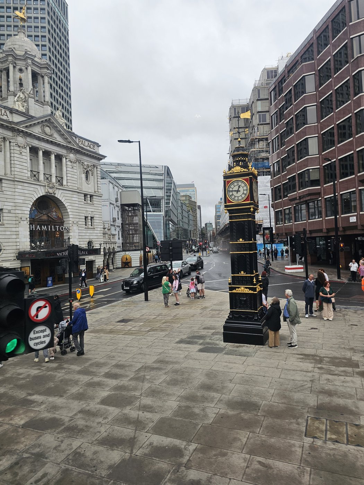
Orang London memanggilnya Little Ben — adik kecil Big Ben, dan itu memang maksudnya. Dia berdiri di perempatan depan Stasiun Victoria sejak akhir abad ke-19, sempat dibongkar berpuluh tahun, lalu dipasang lagi. Ukurannya tidak seberapa, tapi letaknya persis di jalur orang keluar-masuk stasiun tersibuk itu — jadi dia mungkin menara jam yang paling sering dilewati dan paling jarang dilihat di kota ini.
Dan gedung di seberangnya itu Victoria Palace Theatre, teater lama yang bertahun-tahun terakhir dipakai satu pertunjukan saja: Hamilton. Jadi di satu perempatan yang sama ada dua hal khas London — jam besi umur seratus tahun lebih, dan antrean tiket musikal.
Dan tiba-tiba semuanya berdiri berdempetan
Beberapa halte kemudian, bus berhenti, dan begitu turun, seluruh isi buku panduan London berdiri berdempetan dalam radius dua ratus meter.
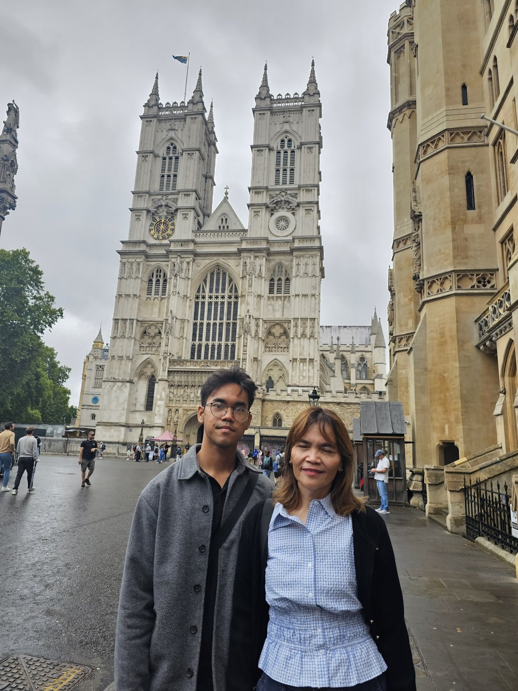
Gereja ini tempat penobatan raja dan ratu Inggris sejak tahun 1066 — hampir seribu tahun berturut-turut, di titik yang sama, dengan kursi yang kurang lebih sama. Di dalamnya ada makam belasan raja, dan satu sudut bernama Poets’ Corner tempat para penulis dimakamkan atau diperingati.
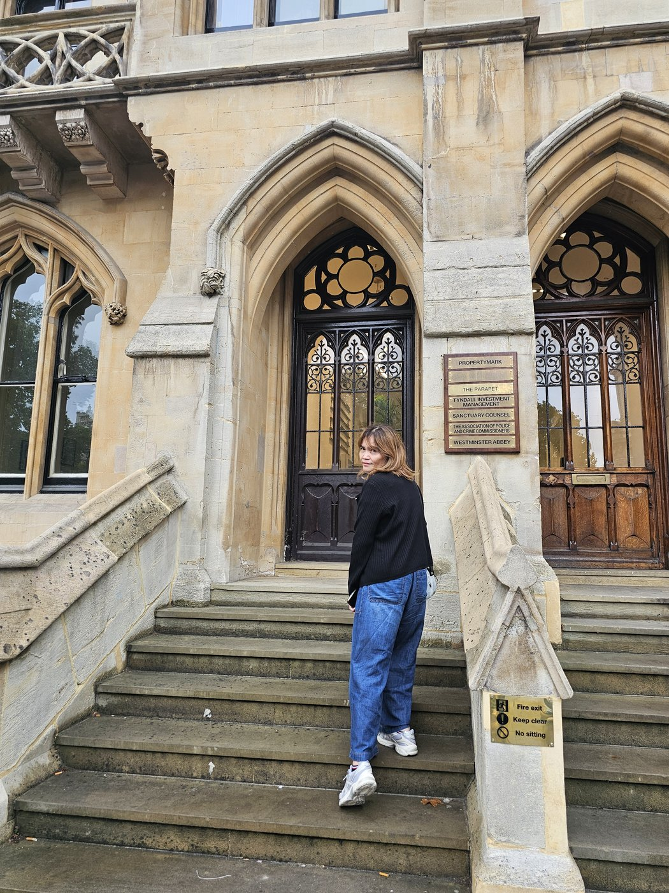
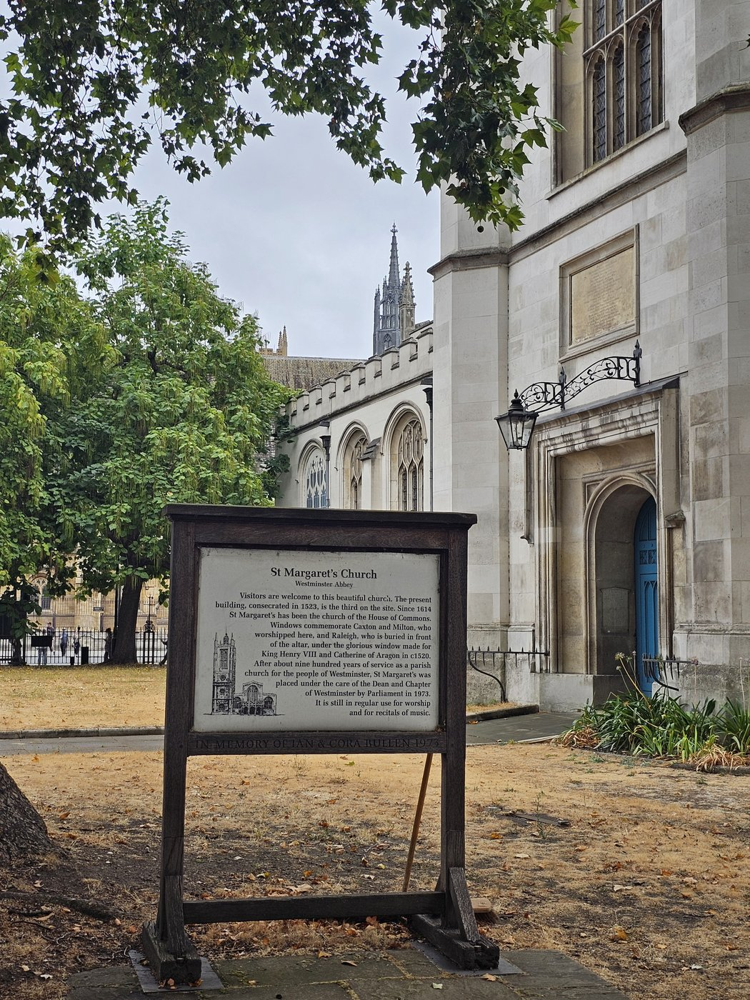
Kiri: papan kuningan di sisi bangunannya — beberapa kantor menumpang di kompleks ini, dan salah satu barisnya tertulis Westminster Abbey. Kanan: sisi yang menghadap Parliament Square, dengan jendela mawar besar di tengahnya dan antrean pengunjung di kaki tembok.
Persis di seberang Abbey, dan hampir tidak ada yang antre
Menyeberang sedikit dari Abbey, ada gedung besar berkubah abu-abu yang bertuliskan Methodist Central Hall di dindingnya. Kelihatannya seperti gedung serbaguna biasa, dan memang itu fungsinya. Tapi ruang di dalamnya pernah dipakai untuk satu hal yang mengubah bentuk dunia modern.
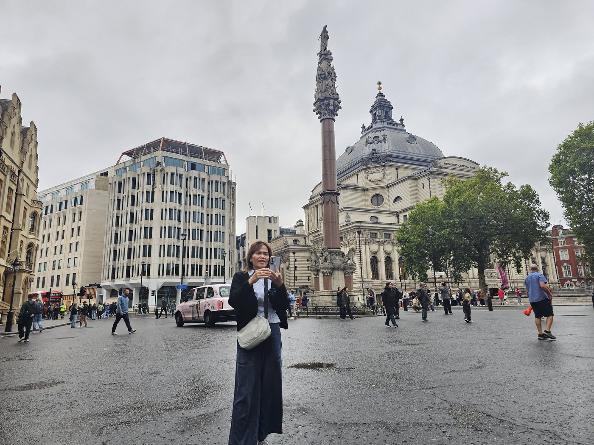
Di gedung inilah, pada Januari 1946, Majelis Umum Perserikatan Bangsa-Bangsa bersidang untuk pertama kalinya. Perang baru saja selesai, PBB baru saja dibentuk, dan markasnya di New York belum ada. Jadi sidang pertamanya menumpang di aula gereja Metodis di seberang Westminster Abbey.
Dan tidak ada apa pun di trotoarnya yang memaksamu berhenti untuk itu. Tidak ada antrean, tidak ada loket. Orang-orang lewat begitu saja menuju Abbey di seberangnya.
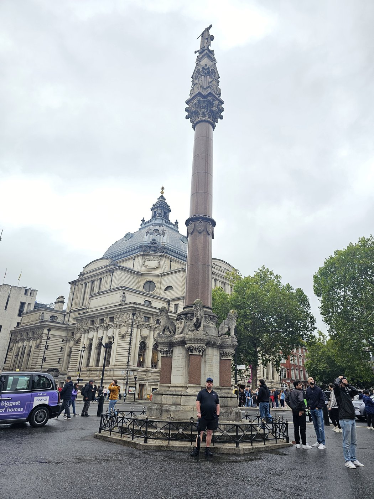
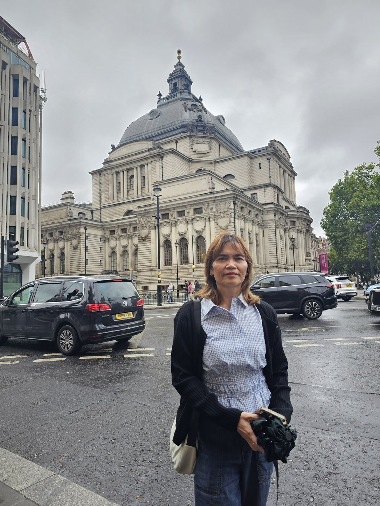
Karena Westminster Abbey berdiri persis di sebelahnya
Di halaman Abbey ada gereja kedua yang jauh lebih kecil, dan hampir semua orang melewatinya tanpa menoleh: St Margaret’s Church. Di depannya ada papan kayu tua berisi keterangan, dan isinya ternyata jauh lebih menarik daripada ukurannya.
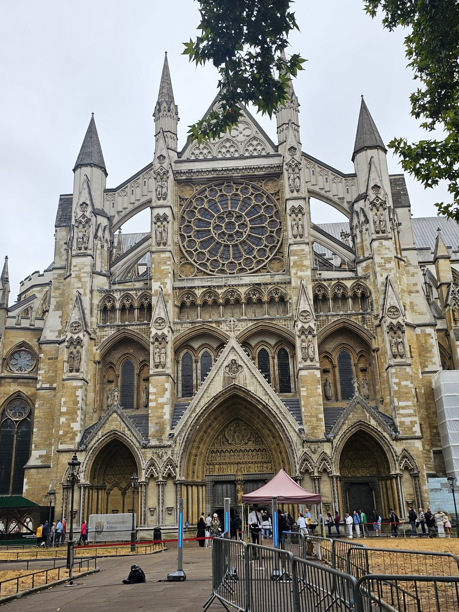
Isi papan itu, kalau diringkas:
Sembilan ratus tahun melayani warga sekitar, makam seorang penjelajah di depan altarnya, dan kaca patri yang dipesan untuk raja yang paling banyak mengubah sejarah gereja Inggris — semuanya di gedung yang berdiri di halaman gedung lain yang lebih besar, dan karena itu jadi tidak kelihatan.
Dan hari ini kami sudah melihat dua-duanya
Jalan sedikit lagi, dan muncullah yang ditunggu semua orang: menara jam di ujung gedung parlemen, dengan empat muka jamnya dan batu kuning yang baru selesai dibersihkan beberapa tahun terakhir.
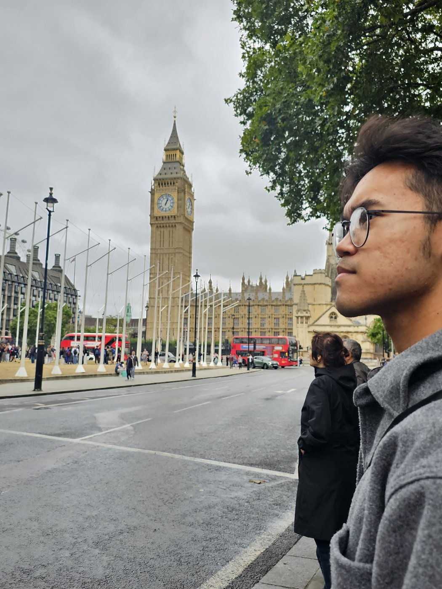
Satu hal yang sering salah kaprah dan enak diketahui: “Big Ben” itu nama loncengnya, bukan nama menaranya. Lonceng besar seberat belasan ton di dalam sana yang namanya Big Ben. Menaranya sendiri baru dinamai resmi pada 2012 — jadi Elizabeth Tower, untuk menandai enam puluh tahun Ratu Elizabeth II bertakhta. Sebelum itu namanya cuma Clock Tower, menara jam.
Jadi hari ini, tanpa direncanakan, kami sudah melihat dua-duanya dalam satu jam: Little Ben di perempatan depan stasiun, dan yang aslinya di ujung jalan.
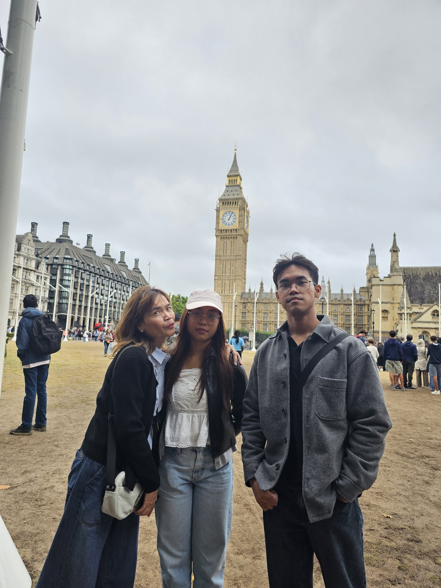
Karena begitulah yang terjadi di sudut ini. Menaranya berdiri diam, dan di trotoar depannya orang bergantian berdiri, tersenyum, lalu tukar posisi.
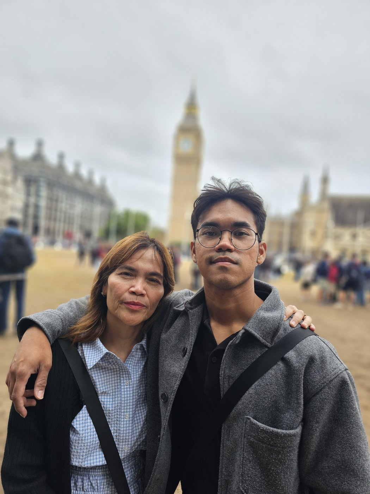
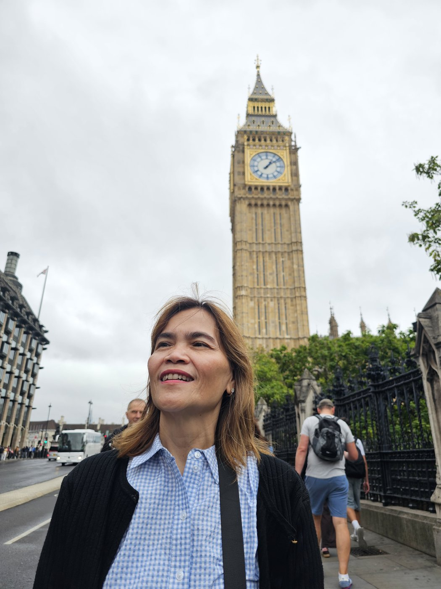
Tidak ada yang istimewa dari komposisinya, dan memang bukan itu gunanya.
Dan sesekali kameranya diarahkan ke atas, ke bagian yang biasanya tidak kebagian perhatian karena semua orang sibuk memasukkan wajahnya ke dalam bingkai.
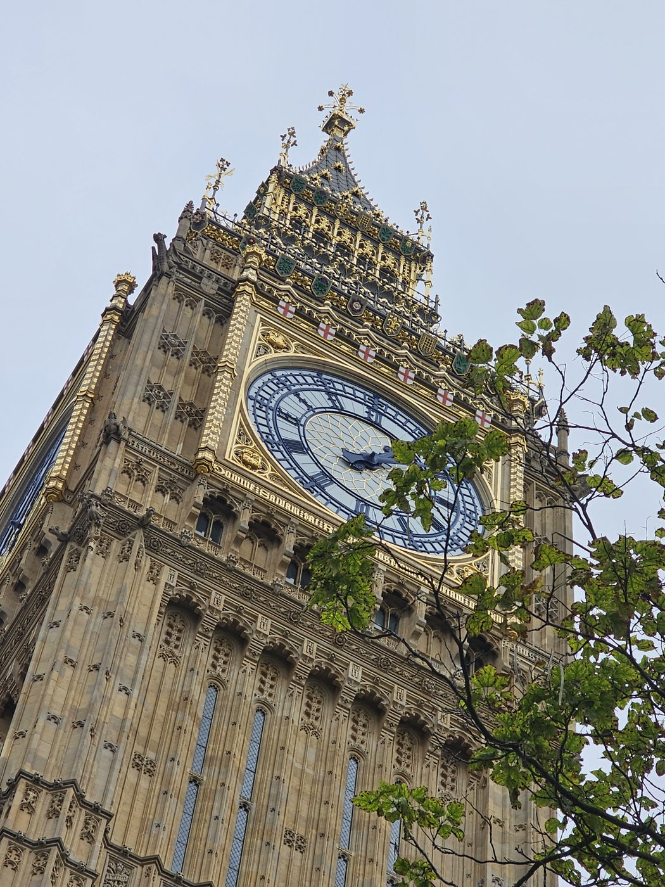
Dan seekor merpati yang jelas tidak peduli
Beberapa langkah dari keramaian itu berdiri sebuah patung perunggu hitam: sosok berjubah panjang, di atas alas batu, menghadap ke jalan. Papan namanya ada, tapi tidak sempat dibaca — dan sejujurnya, yang bikin fotonya diambil bukan patungnya.
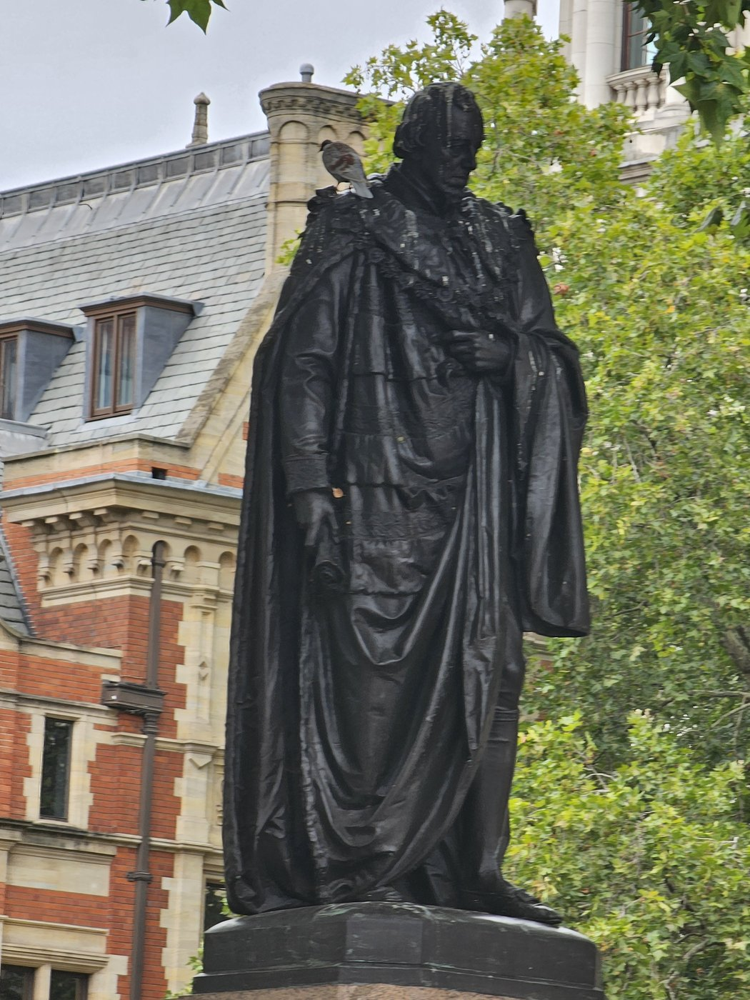
Ini salah satu hal yang perlu diterima kalau waktumu di London cuma setengah hari: tidak semua yang kamu lewati sempat kamu kenali. Di kawasan ini ada puluhan patung, plakat, dan tugu, masing-masing dengan ceritanya sendiri, dan sebagian besar akan kamu lewati begitu saja. Tidak apa-apa. Yang kamu bawa pulang tetap fotonya.
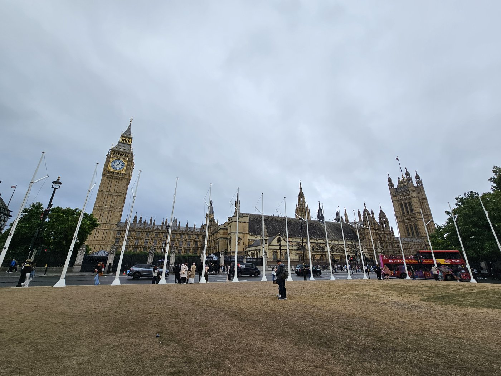
Dan papan kartonnya ditulis dalam dua bahasa
Di trotoar depan pagar gedung parlemen ada suara yang tidak mungkin salah dikenali: bagpipe. Pemainnya berdiri lengkap dengan rok kotak-kotak, sepatu hitam, dan kaus kaki putih setinggi betis — persis seperti di gambar-gambar Skotlandia.
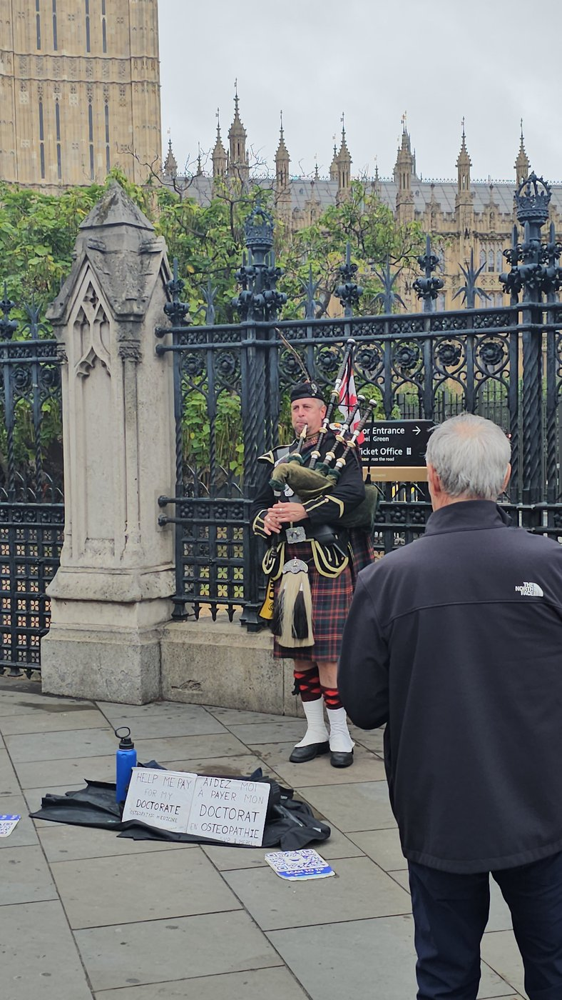
Yang bikin berhenti bukan musiknya, tapi papan karton di depannya. Tulisannya, dalam bahasa Inggris dan Prancis sekaligus: “Help me pay for my doctorate in osteopathic medicine” — bantu saya membayar program doktor osteopati.
Jadi orang ini bukan pengamen dalam arti biasa. Dia mahasiswa yang sedang mengumpulkan biaya sekolah, di trotoar paling ramai di London, dengan alat musik yang menjamin tidak ada yang bisa berjalan lewat tanpa menoleh. Dan strateginya jelas dipikirkan: papannya dua bahasa, dan ada kode QR di sebelahnya untuk yang tidak bawa uang tunai.
Dan alasan mereka berfoto di London, bukan di kota tempat mereka kuliah
Beberapa langkah dari situ, di antara kerumunan yang sedang bergantian berfoto, terdengar bahasa yang sangat familiar. Rombongan mahasiswa Indonesia, baru saja menyelesaikan program masternya — sama-sama baru lulus seperti Annette — sedang berfoto lengkap dengan toga dan topi wisuda.
Ngobrol sebentar, dan keluar dua hal yang menarik.
Pertama, soal biayanya. Sebagian dari mereka berangkat dengan beasiswa LPDP dari pemerintah Indonesia, sebagian lagi dengan beasiswa dari pemerintah Inggris. Dua jalur yang berbeda, tujuan yang sama, dan dua-duanya berakhir di trotoar yang sama siang itu.
Kedua, dan ini yang bikin ketawa: mereka tidak kuliah di London. Kampusnya di Bristol, kota di barat Inggris, sekitar dua jam dari sini. Tapi foto wisudanya sengaja diambil di London — di depan Big Ben, di depan gedung parlemen.
Alasannya, kata mereka sambil tertawa sendiri: “biar lebih afdol — soalnya banyak yang nggak tahu Bristol.”
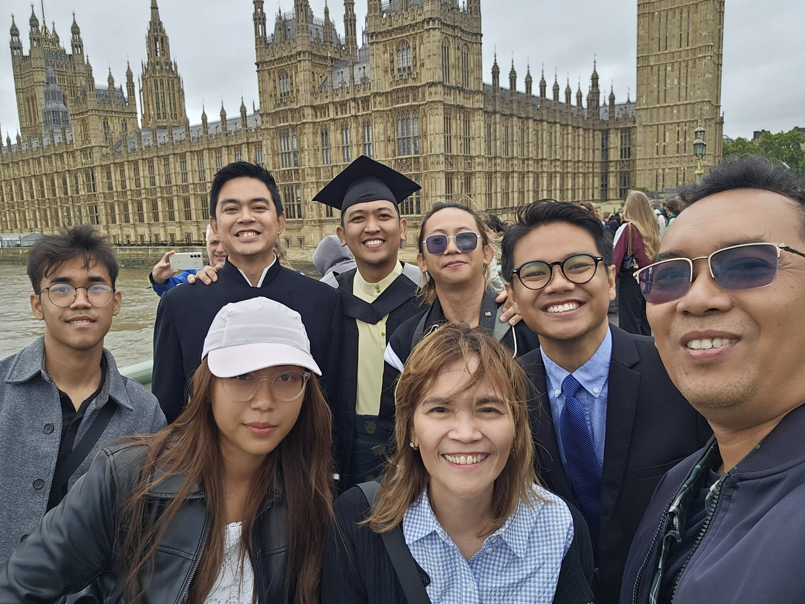
Dan kalau dipikir lagi, itu keputusan yang sangat masuk akal. Foto wisuda bukan dokumen akademik; dia kabar untuk orang rumah. Yang menerimanya di Indonesia mungkin tidak pernah dengar nama kotanya, tapi menara jam itu sudah dikenal seumur hidup. Latar belakangnya dipilih bukan untuk yang berfoto, tapi untuk yang akan melihatnya nanti.
Dan ada satu kebetulan yang baru terasa waktu ditulis ulang di sini. Di satu sudut trotoar yang sama, siang itu, ada dua urusan biaya kuliah sekaligus: rombongan yang sekolahnya dibiayai beasiswa negara — dua negara, malah — dan satu orang yang meniup bagpipe untuk membayar sekolahnya sendiri, koin demi koin. Jaraknya tidak sampai lima puluh meter.
Dan dari sana kelihatan kincir raksasa di seberang sungai
Dari Parliament Square, jalan kaki terus ke arah timur, dan gedung parlemennya baru kelihatan utuh setelah agak menjauh.
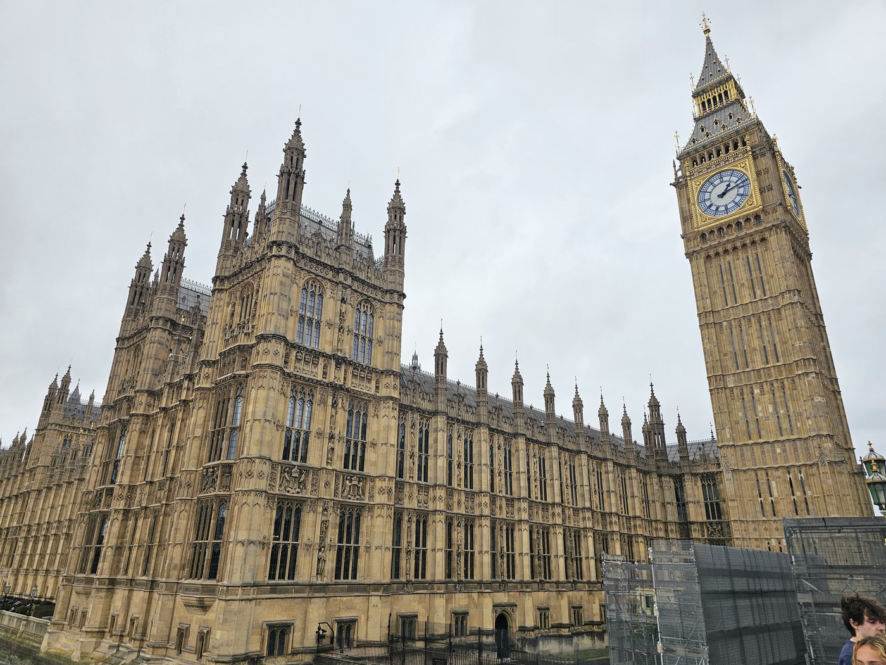
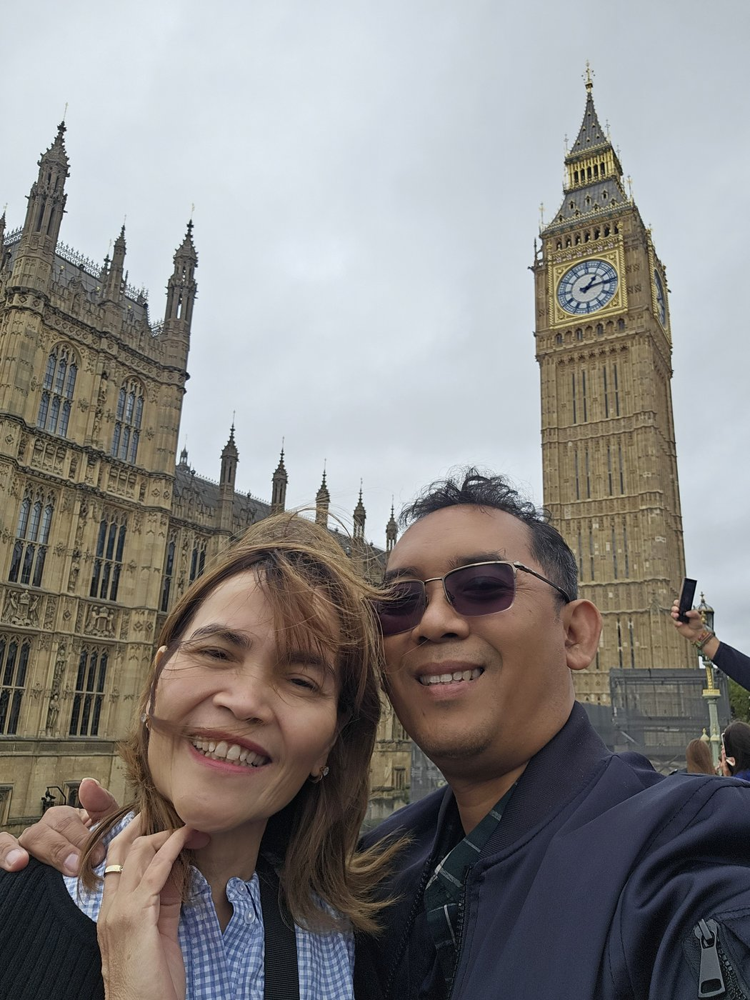
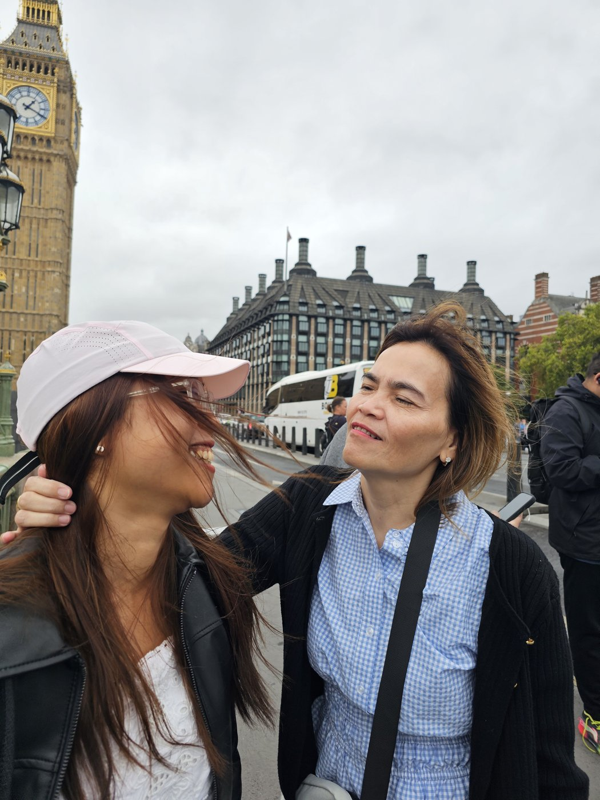
Sudut yang sama, orang yang bergantian. Ini bagian dari perjalanan yang tidak butuh penjelasan apa pun.
Lalu naik ke Westminster Bridge, dan begitu di tengahnya, muncul yang di seberang sungai: London Eye, kincir raksasa yang jadi penanda kota ini sejak awal tahun 2000-an.
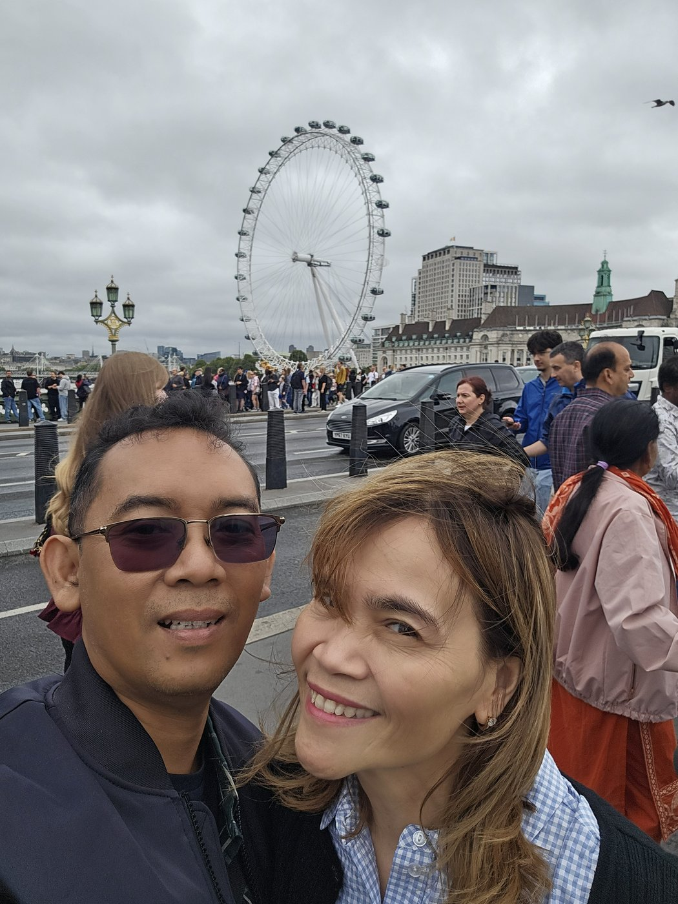
Jam 13.24, dan setengah hari yang tadi terasa terlalu pendek ternyata sudah memuat: satu gereja penobatan berumur seribu tahun, satu gedung tempat PBB memulai, satu gereja parlemen, satu menara jam paling terkenal sedunia, satu peniup bagpipe yang sedang menabung untuk gelar doktor, dan satu rombongan wisudawan dari Bristol yang memilih London sebagai latar belakangnya — plus satu foto bersama yang tidak direncanakan siapa pun waktu berangkat pagi tadi.
Dan kalau diperhatikan jam pada foto-fotonya, ada satu hal yang lucu: seluruh rentetan tadi — rumah bertembok putih, bus tingkat, Little Ben, Westminster Abbey, kubah tempat PBB bersidang, gereja House of Commons, sampai Big Ben — terjadi dalam tiga puluh tiga menit. Dari 12.31 sampai 13.04.
Itulah London kalau kamu tinggal di dekat Victoria dan berani naik bus: jaraknya pendek, dan yang berdesakan bukan orangnya, tapi sejarahnya.
Kalau Hari 11 adalah hari yang semuanya lepas satu per satu, Hari 12 adalah hari semuanya dipasang kembali: kopernya kembali, orangnya kembali, dan kota yang kemarin hilang seharian akhirnya betul-betul diinjak.
Kamu pernah kehilangan koper di perjalanan? Berapa lama sampai balik, dan apakah klaimnya diurus atau dilupakan? Ceritanya ditunggu di kolom komentar di bawah foto mana pun di halaman ini, cukup isi nama.